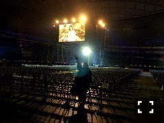

2015/0308Sun少食な自分
最近はとても
早寝早起きです！
お風呂から出て寝るまでが
とにかく早い♪
昨日は3/7、
未央奈の日でした〜♡
まさしく私が勝手に
言ってるだけの日...
でも755やブログで
皆さんが未央奈の日だね〜と
言ってくださり嬉しかったです♬
深川さんが「307！」って
言って来てくださって
凄く可愛かった！
あれ。去年もこんなブログを
更新したっけ...
そんな私は
お部屋の洋服を
冬から春仕様に変えました。
るんるん。

でも変えた途端、気候が冬に
戻って...いつ春になるんやろ(*˙0˙*)？
そうだ。3/12発売のCUTiEの
表紙がどうやら公開
されたみたいです
いつもと違う雰囲気で
撮っていただきました〜♡
私達もメイクをしてもらって
びっくりびっくり。
有難いですね。
撮影も本当に楽しかったです(｡･ω･｡)
お楽しみに！
質問返しpart2
◎未央奈は季節とかによって
メイク変えたりしますか？
もし変えたりするなら
今年の春はどんなメイクをしたい
って考えてるか教えて欲しいです
◯冬はとにかく血色メイクで
オレンジとかコーラルピンクを
よく使っていたけど春夏は
ピンクとか明るめで
パキっとした色を
つけたいな〜と♪
◎好きなスニーカー
教えてほしい
◯ニューバランス、ナイキ
リーボック、スーパースター、
コンバースかな。
今は水色、黒、紺、グレーの
スニーカーを探し中！
◎最近ニューエラのリュック
買ったんだけどみおなは
リュックも好き？
◯気になってはいるけど
持ってないなぁ...
◎オシャレのトレンドなどは
どうやって手に入れてますか？？
◯ブログを見たり雑誌を見たり！
◎堀ちゃんすごい家族と仲良しだけど
家族旅行いけたらどこいきたい？
◯イタリア！
いつか私が家族を色んな所に
連れていってあげたいです。
私の夢。
◎みおなはなかなか
眠れない時なんかはある？
あるならそんな時はどうする？
◯あります(´･_･`)
寝れるまでテレビ見たり
本を読んだり♪
羅生門みたいな話から
ジブリとかバムとケロとか
癒し系の話まで読みます！
◎男の人の髪の毛は長い方が
好きですかそれとも短髪どっち？
◯どちらかといえば短髪かな...
◎未央奈は、なぜ眉毛を見せないの、
見せた方が良いよ...
見せたらガッキーに似てるから、
見せたらガッキーに似てるから、
見せて下さい...
理由は特にないですよ。
理由は特にないですよ。
◯おでこが広いんです(T ^ T)
あと眉毛が情けない...
でも最近はよく分けていますよ♪
続く
星新一さんの小説が気になる
この頃です‼︎


寒い中、九十九里での撮影
頑張りました(T . T)
出来上がったジャケ写は
寒すぎて縮こまっていました笑
みなみも！
2人共寒がり(o_o)
"写真展"
テーマは「2月の私」
あらゆる写真とその写真に
ついてのコメントを一言書きます。
気まぐれなコーナー(｡･ω･｡)

撮影者まりっかさん
"モチモチの木みたいな木と堀"

カラフル！

西武ドーム広かったなぁ♡
ライブリハの時に
ちはるさんに撮ってもらった！

"命は美しい"の
高山さんとのシーン。
映っちゃいけないもの
ではないですよ！
顔が青白いのは寒いから...
以上
次の"写真展"のテーマは「食」です
何かしてほしいテーマがあったら
どしどし教えて下さい♪
採用しちゃうかもっ？

花粉症みなみおな♡
告知
◎Popteen発売中
◎月刊MdN発売中
◎今日0:00〜乃木坂ってどこ？
あれが放送されるかも？
私の太ってた頃
(気づいたら片想い)の
VTRにはびっくりしないで
下さいね(T . T)笑
◎3/12 CUTiE発売
みなみと生駒さんと表紙を
させていただきました。
ワンピース企画にも出ているので
良かったら見てください！
◎3/18 「命は美しい」発売
type-Cにはペアpvの
松井玲奈x堀未央奈が収録
されています♪
◎3/20 読売中高生新聞発売
よろしくお願いします。
おまけ


お弁当を選んでいる様子を
伊織に盗撮された...笑
何か喋っている私。笑
イチゴ狩り行きたいな〜♬
ではでは
おやすみおな(ヽ´ω`)
2015/03/08 21:54
コメント(725)
みおな～、忙しいのにブログ更新ありがとーねp(^^)q
乃木どこの脇の体操、おもろすぎるやろ(笑)
やってるときの、みおなの真顔がいいねぇ(^^)
魔女の宅急便のモノマネは、似てたよ‼
ジブリは大好きだからぁ、よくDVD見てたし最近もたまに見るよo(^o^)o
「耳をすませば」はオススメだよ(^-^)
モバメの事は気にしないで(ﾟεﾟ)
忙しいくてできないのは、しょうがないよ(^-^)
これからも、頑張ってね(*^▽^)/★*☆♪
乃木どこの脇の体操、おもろすぎるやろ(笑)
やってるときの、みおなの真顔がいいねぇ(^^)
魔女の宅急便のモノマネは、似てたよ‼
ジブリは大好きだからぁ、よくDVD見てたし最近もたまに見るよo(^o^)o
「耳をすませば」はオススメだよ(^-^)
モバメの事は気にしないで(ﾟεﾟ)
忙しいくてできないのは、しょうがないよ(^-^)
これからも、頑張ってね(*^▽^)/★*☆♪
みおな！！今日ね第一志望の高校に合格したの！！
昨日の夜中に、１００グラムのさんまの蒲焼の缶詰を全部食べて汁まですすったら、また胃がもたれました。
だいぶ前に妹が星新一の小説をよく読んでいて、自分もちょっと読んでみましたが内容は忘れた。
撮影者まりっかさんの“モチモチの木みたいな木と堀”が好きです。背景の場所へ行って、寝ころんでみたい。
最後のおまけ、保存しました。
だいぶ前に妹が星新一の小説をよく読んでいて、自分もちょっと読んでみましたが内容は忘れた。
撮影者まりっかさんの“モチモチの木みたいな木と堀”が好きです。背景の場所へ行って、寝ころんでみたい。
最後のおまけ、保存しました。
みおなちゃん(｢･ω･)｢♡
307みおなの日っていろんなところで言われてたよ〜ヽ(´▽`)ﾉ♡
CUTEIの表紙見たよ(∗•ω•∗)お人形みたいで可愛すぎるよ〜(´･_･`)♡♡
お弁当選んでるみおなちゃんかわいい（笑）なんて喋ってたんだろう？？笑
あさみん♡
307みおなの日っていろんなところで言われてたよ〜ヽ(´▽`)ﾉ♡
CUTEIの表紙見たよ(∗•ω•∗)お人形みたいで可愛すぎるよ〜(´･_･`)♡♡
お弁当選んでるみおなちゃんかわいい（笑）なんて喋ってたんだろう？？笑
あさみん♡
乃木どこ面白かった♪
ずっとメロディーが頭のなかで流れてる～
私もバムケロの絵本好き♪
ずっとメロディーが頭のなかで流れてる～
私もバムケロの絵本好き♪
みおなー(・ω・)ノ
毎回ブログ読んでるけど何気初コメです！笑
きょうね、わたし飲食店のバイトやっとるんやけどレジで伝票番号をうつときに伝票番号みたら307だったの♪みおなや！と思ってすごい嬉しかったよ♡
っていう報告（笑）あと274でふなっしーとも思った！みおなふなっしーすき⁇
４月の京都の握手会行くからみおなに会えるのすごい楽しみー(((o(*ﾟ▽ﾟ*)o)))なに話そうかな…！初めての握手会♪♪
毎回ブログ読んでるけど何気初コメです！笑
きょうね、わたし飲食店のバイトやっとるんやけどレジで伝票番号をうつときに伝票番号みたら307だったの♪みおなや！と思ってすごい嬉しかったよ♡
っていう報告（笑）あと274でふなっしーとも思った！みおなふなっしーすき⁇
４月の京都の握手会行くからみおなに会えるのすごい楽しみー(((o(*ﾟ▽ﾟ*)o)))なに話そうかな…！初めての握手会♪♪
みおな~大撮影会お疲れ様(｡-_-｡)
みおなの日なんか嬉しかった（≧∇≦）
未央奈のマスク
みおなの日なんか嬉しかった（≧∇≦）
未央奈のマスク
ワンピースの、かわいいお店教えてー
やっばみなみおな見てると癒される〜(((o(*ﾟ▽ﾟ*)o)))
ところでみおなは服買うのってお母さんと行く派？
それとも自分で、選ぶ派？
ところでみおなは服買うのってお母さんと行く派？
それとも自分で、選ぶ派？
小6の女子です！
みおな好き♡
みなみも好き♡
だからみなみおなの写真見ると
嬉しい〜٩(๑❛ᴗ❛๑)۶
3月で愛媛に引っ越しちゃう(>_<)
それでパパが乃木坂46カフェに申し込んでくれてて
初日に当たったよ〜！！！！！
ちょー嬉しかった♥︎
最後に、行きます！
楽しみ〜(●´ー｀●)
全国握手会も行こうと思ったけど
3月中になかった（；＿；）
京都は遠いから行けないよー（；＿；）
チェキ会当たんなかった（；＿；）
遠くから応援するね！
最後に質問！
髪の毛がリンスしてもトリートメントしてもいっぱいといても絡まっちゃう(>_<)みおなはどうしてますか？
みおな大好き♡
みおな好き♡
みなみも好き♡
だからみなみおなの写真見ると
嬉しい〜٩(๑❛ᴗ❛๑)۶
3月で愛媛に引っ越しちゃう(>_<)
それでパパが乃木坂46カフェに申し込んでくれてて
初日に当たったよ〜！！！！！
ちょー嬉しかった♥︎
最後に、行きます！
楽しみ〜(●´ー｀●)
全国握手会も行こうと思ったけど
3月中になかった（；＿；）
京都は遠いから行けないよー（；＿；）
チェキ会当たんなかった（；＿；）
遠くから応援するね！
最後に質問！
髪の毛がリンスしてもトリートメントしてもいっぱいといても絡まっちゃう(>_<)みおなはどうしてますか？
みおな大好き♡
みおなも今日1日お疲れさま！
今日は一晩で10万人以上もの人が亡くなった東京大空襲から70年の日です。
二度と絶対に戦争の惨禍が起きないように一人一人が努力をしなければいけないと改めて心しなければと思います。
平和だからこそ楽しく乃木坂を応援することができるのですから。
二度と絶対に戦争の惨禍が起きないように一人一人が努力をしなければいけないと改めて心しなければと思います。
平和だからこそ楽しく乃木坂を応援することができるのですから。
みおなこんばんは！
最近ブログに
※出来てなくてごめんよ(´；ω；｀)
次からちゃんと出来ると思う!!!
でも今までのブログちゃんと読んでます♪
いつもありがとね(*´ω｀*)
短いけどこの辺で
みなみおな(o^^o)
小6の女子です！
みおな好き♡
みなみも好き♡
みなみおな٩(๑❛ᴗ❛๑)۶
あのね、
3月で愛媛に引っ越しちゃうの(>_<)
それでパパが乃木坂46カフェに申し込んでくれてて
初日に当たったよ〜！！！！！
ちょー嬉しかった♥︎
最後に、行きます！
楽しみ〜(●´ー｀●)
全国握手会も行こうと思ったけど
3月中になかった（；＿；）
京都は遠いから行けないよー（；＿；）
チェキ会当たんなかった（；＿；）
遠くから応援するね！
あと質問！
りんすとかとりーとめんとやったり髪を一生懸命とかしてるんだけどすごい絡まっちゃう(>_<)
みおなはどうしてる？教えてー♥︎
みおな大好き♡おやすみおな☆彡
みおな好き♡
みなみも好き♡
みなみおな٩(๑❛ᴗ❛๑)۶
あのね、
3月で愛媛に引っ越しちゃうの(>_<)
それでパパが乃木坂46カフェに申し込んでくれてて
初日に当たったよ〜！！！！！
ちょー嬉しかった♥︎
最後に、行きます！
楽しみ〜(●´ー｀●)
全国握手会も行こうと思ったけど
3月中になかった（；＿；）
京都は遠いから行けないよー（；＿；）
チェキ会当たんなかった（；＿；）
遠くから応援するね！
あと質問！
りんすとかとりーとめんとやったり髪を一生懸命とかしてるんだけどすごい絡まっちゃう(>_<)
みおなはどうしてる？教えてー♥︎
みおな大好き♡おやすみおな☆彡
今日もお疲れ様。チェキ会当たらんかったよ( ´∵｀)
期待してたから結構凹んでる…笑
いつかまたあるといいなぁ
また11thの握手会で会えるのを楽しみにしてます
乃木どこ見たよ！よだれだこも(日村さんとの)くされ神のやつも久しぶりに見てすごい面白かった！ワキの体操は乃木坂をあんまり知らない会社の後輩も見たらしくて「堀ちゃんって子おもしろいですね」って言ってたよ！( ´ ▽ ` )ﾉ何か自分も推しメン褒められて嬉しかった笑
忙しいみたいだけど体調崩さんようにね！モバメは余裕ある時でいいし、「おはよう」って1通くるだけでもすごく元気でるよ！いつもありがとう(^-^)
明日も頑張ろね！
期待してたから結構凹んでる…笑
いつかまたあるといいなぁ
また11thの握手会で会えるのを楽しみにしてます
乃木どこ見たよ！よだれだこも(日村さんとの)くされ神のやつも久しぶりに見てすごい面白かった！ワキの体操は乃木坂をあんまり知らない会社の後輩も見たらしくて「堀ちゃんって子おもしろいですね」って言ってたよ！( ´ ▽ ` )ﾉ何か自分も推しメン褒められて嬉しかった笑
忙しいみたいだけど体調崩さんようにね！モバメは余裕ある時でいいし、「おはよう」って1通くるだけでもすごく元気でるよ！いつもありがとう(^-^)
明日も頑張ろね！
コメントが反映されてない(泣)
今日の大撮影会たこ焼きポーズ可愛かった(^^)
ありがとう！
乃木ののも乃木どこも今日は未央奈満載だったね！
今日の大撮影会たこ焼きポーズ可愛かった(^^)
ありがとう！
乃木ののも乃木どこも今日は未央奈満載だったね！
堀ちゃん こんばんは
今日も１日お疲れさまでした。
娘(9ヵ月)が今夜急に体調を崩してさ、抱っこしてあやしてたらミルクを頭からかけられて大慌て！ちょとした大惨事でした。
そうだ、写真展のテーマは「ちょとした大惨事」はどうかなー？
ではでは、また明日
おやすみなさい
kuribou
今日も１日お疲れさまでした。
娘(9ヵ月)が今夜急に体調を崩してさ、抱っこしてあやしてたらミルクを頭からかけられて大慌て！ちょとした大惨事でした。
そうだ、写真展のテーマは「ちょとした大惨事」はどうかなー？
ではでは、また明日
おやすみなさい
kuribou
未央奈～❥❥
モバメありがとう( *˘ω˘* )
今日は収録お疲れさま！！
乃木どこの収録かな？＊*
最近伊織ちゃんとの写真たくさんやね♪♪
二人とも髪さらさらっっ
昨日と今日おんなじ数のモバメきてたよ？
毎日送ってくれるだけで嬉しい♡♡
お仕事も大事やから無理しんといてね！
ありがとう＊*
あ！乃木のの聞いたよ！！
未央奈いつも１期生とやったから新鮮やったなあ～ 方言が可愛くて…(｡･ω･｡)
ひなみお改め堀北コンビすき！
真面目な話も二人の普段の雰囲気も伝わってきてこのコンビの乃木のの聞けてよかったです＊*
毎週焼き肉行ってたことに驚き。笑
スタイル維持の秘訣を教えてください（/_ ; ）
デニムのジャケット可愛いっっ
私もほしくなった！笑
今日寒くなかった？雪が降ってたみたい！
防寒しっかりね(。・ω・。)
またコメントするね～～
おやすみおな＊*
チェキ会当たっちゃった。
当たらないと思ってたからうれしい
当たらないと思ってたからうれしい
掘さんへ
初めまして。
ともけんと申します。
いつもは畠中さんのブログにコメントしている者ですが、貴女のブログに星新一さんのことが書かれていたので、思わずひとことが言いたくてコメントさせていただきました。
小生も星新一さんのショートが大好きで、古本屋に行くと必ず星新一さんの本を探して買っています。
ついつい同じ本を買ってしまうこともあるのですが、星新一さんのすごいところは、一度読んだことのある本だとは気づかずに、いつ読んでも、何回読んでも、いつも新鮮に感じることです。
また時代を感じさせず、誰でも楽しめるのも魅力と思います。
最近は古本屋でしか、なかなか見かけませんが、貴女もタップリと楽しんでいただければ、星新一ファンとしては幸いです。
では、風邪などひかぬよう、お身体をご自愛ください。
byともけん
未央奈さん、今日もお疲れ様。
乃木どこだったり、乃木ののだったりと書きたい事は沢山！
でも、昨日から徹夜で仕事。
只今絶賛45時間稼働中・・・
なのでそろそろ電池切れです！
また明日ちゃんとコメするね！
乃木どこだったり、乃木ののだったりと書きたい事は沢山！
でも、昨日から徹夜で仕事。
只今絶賛45時間稼働中・・・
なのでそろそろ電池切れです！
また明日ちゃんとコメするね！
みおな、こんばんは！ 昨日は久々に寒かったです。 急な温度変化に気おつけてください。。 では、今日もみおなに良いこと沢山ありますように！ おやすみおな！！
みおなー╰(‘ω’ )╯三
乃木どこ見たよ！めっちゃかわいかった(･д･｡)
乃木どこ見たよ！めっちゃかわいかった(･д･｡)
みおな~大撮影会お疲れ様(｡-_-｡)
みおなの日なんか嬉しかった（≧∇≦）
未央奈のマスク
みおなの日なんか嬉しかった（≧∇≦）
未央奈のマスク
最後の弁当、金兵衛ですかね？
あれの西京焼きは絶品ですよね♪
個人的には、おかずのマカロニサラダと枝豆と中華風の春雨サラダがお気に入りですが( 〃▽〃)
ちなみに、一番好きなロケ弁って何ですか！？
最近は一般の人でも買えるみたいですよ♪
あれの西京焼きは絶品ですよね♪
個人的には、おかずのマカロニサラダと枝豆と中華風の春雨サラダがお気に入りですが( 〃▽〃)
ちなみに、一番好きなロケ弁って何ですか！？
最近は一般の人でも買えるみたいですよ♪
こんばんわ！307♫
最近、ご機嫌なことが多そうだね^^
そーいう明るいコメントを見るとこっちも嬉しくなってくる♪
遅くなったけど…
3/8の乃木坂って、どこ？面白すぎた！！
千鳥のものまね、魔女の宅急便、脇の体操…良かった♪♪
でも一番うけたのは「本気のギャー」(笑)
面白い未央奈がたくさん見れて楽しかった☆
短文コメントでゴメンねっっ！！
お仕事がんばって☆
じゃあまた♪
あっ…asicsのコートかっこいい！！暖かそう♪
最近、ご機嫌なことが多そうだね^^
そーいう明るいコメントを見るとこっちも嬉しくなってくる♪
遅くなったけど…
3/8の乃木坂って、どこ？面白すぎた！！
千鳥のものまね、魔女の宅急便、脇の体操…良かった♪♪
でも一番うけたのは「本気のギャー」(笑)
面白い未央奈がたくさん見れて楽しかった☆
短文コメントでゴメンねっっ！！
お仕事がんばって☆
じゃあまた♪
あっ…asicsのコートかっこいい！！暖かそう♪
仕事お疲れ様です！
ようやく時間ができたのでコメントφ(．．)
写真展企画の提案！！
【なりきりジブリ】なんてテーマはどーでしょうか？堀さんが好きなジブリのシーンを堀さんが演じてパシャリ！的な？
この案ご検討くださいm(._.)m
あとCUTIE買います！
発売日に買えるかはわかんないけど…(._.)
楽しみです(笑)
これからも応援させていただきます！
でゎ(。・。・)ノ
ようやく時間ができたのでコメントφ(．．)
写真展企画の提案！！
【なりきりジブリ】なんてテーマはどーでしょうか？堀さんが好きなジブリのシーンを堀さんが演じてパシャリ！的な？
この案ご検討くださいm(._.)m
あとCUTIE買います！
発売日に買えるかはわかんないけど…(._.)
楽しみです(笑)
これからも応援させていただきます！
でゎ(。・。・)ノ
めっちゃ久しぶりに
なっちゃった(T^T)
こんばんは(ヽ´ω`)
仕事場の環境が少し変わって
めっちゃ忙しいよー(T_T)
仕事→帰る→ちょっと寝る
仕事→帰る→ちょっと寝る
の繰り返し
また、時間見つけて
コメントします(>_<)
未央ちゃんも
お仕事頑張ってね～o(^-^o)(o^-^)o
以上！
よだれダコ見れて幸せ(*´-`)♪
おやすみおな(ヽ´ω`)
おはようございます(^-^ゞ日村さんとのコンビ名教えてちょ♪('ー')/~~
堀ちゃん おはよう☀
気持ちのよい朝だね。
娘はよく寝たようでケロッとしてる。
でも今日はお医者さんにお世話になります。
季節の変わり目は体調崩しやすいから気を付けてね✨
今日も１日がんばろうね
kuribou
気持ちのよい朝だね。
娘はよく寝たようでケロッとしてる。
でも今日はお医者さんにお世話になります。
季節の変わり目は体調崩しやすいから気を付けてね✨
今日も１日がんばろうね
kuribou
こんにちは〜
初めてコメント入れます。 先日のワキの体操やら乃木坂の の とか、自分の誕生日3月7日が みおなの日！って、知ってから
堀ちゃんが気になって気になって…
で。コメント入れた次第です。
27歳のオッサンですが…苦笑 応援していきます！
755も楽しみにしてます。
独自の世界観をもつ 堀ちゃんガンバ！
初めてコメント入れます。 先日のワキの体操やら乃木坂の の とか、自分の誕生日3月7日が みおなの日！って、知ってから
堀ちゃんが気になって気になって…
で。コメント入れた次第です。
27歳のオッサンですが…苦笑 応援していきます！
755も楽しみにしてます。
独自の世界観をもつ 堀ちゃんガンバ！
未央奈ちゃん、かわいいー♡
写真を見てると癒やされます！！
未央奈ちゃんも花粉性なんだ、つらいよねー。
風邪とかひかないようにね！
私は食べ物なにがすきだろー？しゃぶしゃぶとか…（笑）
これからも応援してるね！
写真を見てると癒やされます！！
未央奈ちゃんも花粉性なんだ、つらいよねー。
風邪とかひかないようにね！
私は食べ物なにがすきだろー？しゃぶしゃぶとか…（笑）
これからも応援してるね！
今日で東日本大震災からまる4年か。
月日が経つのは早い。
撮影会お疲れさま
たこ焼きポーズの堀ちゃん、可愛かった
 待受にしてて仕事の前に毎回眺めて、時間になったら、画像の堀ちゃんに「行ってきます」仕事が終わって、車に戻ってきたら「終わったよ」って言ってるよ
待受にしてて仕事の前に毎回眺めて、時間になったら、画像の堀ちゃんに「行ってきます」仕事が終わって、車に戻ってきたら「終わったよ」って言ってるよ
次は、11枚目の握手会の東京ビックサイトだよ。たしか、２部だったような 楽しみにしてるね
楽しみにしてるね
たこ焼きポーズの堀ちゃん、可愛かった
次は、11枚目の握手会の東京ビックサイトだよ。たしか、２部だったような
みおな～♡
花粉症みなみおな可愛い♡笑
乃木どこ！みおないっぱい尺取れてたね！笑
脇の体操もわんつっすり！
乃木のの！みおな良い声してるよね♡
みおなの笑い声につられて笑っちゃう（笑）
755ではちょこっとやじコメしたんやけど
一応報告！大学合格したよ～！
これでみおなに会いに行ける…かな？笑
その前にバイトしてお金貯めるわ！笑
花粉症みなみおな可愛い♡笑
乃木どこ！みおないっぱい尺取れてたね！笑
脇の体操もわんつっすり！
乃木のの！みおな良い声してるよね♡
みおなの笑い声につられて笑っちゃう（笑）
755ではちょこっとやじコメしたんやけど
一応報告！大学合格したよ～！
これでみおなに会いに行ける…かな？笑
その前にバイトしてお金貯めるわ！笑
みおなおはよう！
当たり前と思える日々もそうではない
1日1日大事に過ごそう
RedCatsです。
未央奈、乃木どこ見たぞ＼(*⌒0⌒)ｂ♪。
「ワキの体操、１、２、３」良かったぜ。
できたら、ライブか握手会で、お客に振ってくれ。
全力で返してみせる。
未央奈絶賛応援中(*^▽^)/★*☆♪。
未央奈、乃木どこ見たぞ＼(*⌒0⌒)ｂ♪。
「ワキの体操、１、２、３」良かったぜ。
できたら、ライブか握手会で、お客に振ってくれ。
全力で返してみせる。
未央奈絶賛応援中(*^▽^)/★*☆♪。
みおちゃん、おはよう！
今日もみおちゃんが変わらずに笑顔でいられますように。そして、今日はたくさんの方達が笑顔で幸せでいられますように。
大切な事、伝えてくれてありがとう。今日もみおちゃんが大好きだよ(*^^*)今日も寒いから風邪ひかないでね◎
今日も１日みおちゃんにとって、笑顔にあふれるステキな１日になりますように◎
今日もみおちゃんが変わらずに笑顔でいられますように。そして、今日はたくさんの方達が笑顔で幸せでいられますように。
大切な事、伝えてくれてありがとう。今日もみおちゃんが大好きだよ(*^^*)今日も寒いから風邪ひかないでね◎
今日も１日みおちゃんにとって、笑顔にあふれるステキな１日になりますように◎
少しでもだれかの力になれるのか？
自分も常に考えてました。
でも
そんな大きなことじゃなくても
『忘れない』という気持ちが
いつかきっと大きな大きな力に
なっていくんだと思います。
まだまだ大変な思いで
生活されてる方
癒されない気持ちを
持ち続けてる方に
笑顔になれる時がふえますように
みおな？
病院て、どっか悪いの❓
花粉症❓
お大事に❗️
病院て、どっか悪いの❓
花粉症❓
お大事に❗️
みおな大丈夫か?
花粉症大丈夫ですか？
私は今年はお薬もらったから大丈夫！と余裕ぶっこいてマスクなしで遊んだら見事に鼻水と喉がぁぁ…( ﾟдﾟ)
桜がはやく咲かないかな〜と待ち遠しい。
写真展！
「食」っていうつもりだったのに、次だったとは（笑）
ん〜「みおなのみつけた春」とかはどうでしょうか？
どんなところでみおなが春を感じるのか気になります（＾ω＾）‼︎
私は今年はお薬もらったから大丈夫！と余裕ぶっこいてマスクなしで遊んだら見事に鼻水と喉がぁぁ…( ﾟдﾟ)
桜がはやく咲かないかな〜と待ち遠しい。
写真展！
「食」っていうつもりだったのに、次だったとは（笑）
ん〜「みおなのみつけた春」とかはどうでしょうか？
どんなところでみおなが春を感じるのか気になります（＾ω＾）‼︎
未央奈。
いつもみてます。
今日は、3 11ですね、
私は今日2人を見たとき日本って素晴らしいと思いました。
ひとりは、車椅子に座っているかたがドアが開けられないため、困っているところに、ある若い女の方がドアを開けているところを目の前にして
日本は素晴らしいと思いました。
もう一人は
家のない方が渋谷であるいていました。その方が急に座り込んだためどうしたのかと思いました。そこには100円玉が一枚ありました。その方は拾って嬉しそうに 帰っていきました。
もし、その100円玉がわざと落とされていたのなら、日本は素晴らしいと思います。誰にでも平等です。でも、チャンスや希望を与える事がこんなにも美しいのだと知りました。
未央奈にも、必ずチャンスや、奇跡は訪れます。希望を捨てずに前を向いて欲しいです。
頑張って下さい。
いつもみてます。
今日は、3 11ですね、
私は今日2人を見たとき日本って素晴らしいと思いました。
ひとりは、車椅子に座っているかたがドアが開けられないため、困っているところに、ある若い女の方がドアを開けているところを目の前にして
日本は素晴らしいと思いました。
もう一人は
家のない方が渋谷であるいていました。その方が急に座り込んだためどうしたのかと思いました。そこには100円玉が一枚ありました。その方は拾って嬉しそうに 帰っていきました。
もし、その100円玉がわざと落とされていたのなら、日本は素晴らしいと思います。誰にでも平等です。でも、チャンスや希望を与える事がこんなにも美しいのだと知りました。
未央奈にも、必ずチャンスや、奇跡は訪れます。希望を捨てずに前を向いて欲しいです。
頑張って下さい。
未央奈こんばんわぁ(^o^)モバメありがとう(^-^)/
今日で震災から4年経ちましたね(o_o)今日は仕事で福島まで行って来たけどまだまだ復興が出来て無い事を改めて知りました(o_o)早く復興して欲しいです。
今日で震災から4年経ちましたね(o_o)今日は仕事で福島まで行って来たけどまだまだ復興が出来て無い事を改めて知りました(o_o)早く復興して欲しいです。
お弁当選んでるの可愛い…( ੭ ˙࿁˙ )੭♡
みおなちゃんみてるとほんと癒される〜。
花粉症つらそう…私の周りもみんな花粉症でマスクしてる‼︎
いちご狩りいいね〜(⑅˃◡˂⑅)
みおなちゃん、こんばんは。
３月１５日のツーショット"チェキ会、行けないです。みおなちゃん、ごめんなさい。僕は、めっちゃ行きたかったです。
最後の写メのみおなちゃん、めっちゃかわいいです。
みおなちゃん、花粉症大丈夫ですか。
みおなちゃん、体調に気をつけて仕事頑張ってね。
またコメントするね。
３月１５日のツーショット"チェキ会、行けないです。みおなちゃん、ごめんなさい。僕は、めっちゃ行きたかったです。
最後の写メのみおなちゃん、めっちゃかわいいです。
みおなちゃん、花粉症大丈夫ですか。
みおなちゃん、体調に気をつけて仕事頑張ってね。
またコメントするね。
えっ❗️みおなちゃん太ってたのお⁉️
ちょっとその写真見てみたいニャ(^o^)/
ところで質問〜*\(^o^)/*
自分短髪で髪の色ショッキングピンクなんけど、そんな男子はどうですかあ⁉️
ちょっとその写真見てみたいニャ(^o^)/
ところで質問〜*\(^o^)/*
自分短髪で髪の色ショッキングピンクなんけど、そんな男子はどうですかあ⁉️
東日本大震災から今日で4年になりましたね。
自分には何が出来るだろう。
それは阪神淡路大震災で
祖父母、両親を一瞬で失った自分にとって今でも答えを探してる。
でも、時間は止められない。
巻き戻せない。
自分が出した答えは、『笑顔』でいること
その笑顔で1人でも多くの笑顔が生まれたらって
それこそが、自分の出来る事なんじゃないかって思ってる。
だって俺は生きている。
『誰もが生きる奇跡
うまれてきた ただそれだけで
愛されてる証』
俺も愛されてる証なんだって。
ならいっぱい笑顔をつくろう！
未央奈は、いろんな所でその笑顔を発信できる。
だからこそ、未央奈にはたくさん笑顔を作ってほしい。
未央奈の笑顔に救われたのは俺1人じゃないから。
笑うことは、笑顔は最も簡単な成功法やから。
みんなが笑顔になれる日を見たいですね。
未央奈、うちらファンだけじゃなく、世界中みんなが笑顔になれる日を。
まずは、うちらから始めよう。
そうすれば、いつかきっと。
未央奈の笑顔はたくさんの人を笑顔にさせる魔法がある。
笑顔を忘れずに、1日1日を大切に頑張っね。
俺も頑張ります。
しげ【未央奈単推し】より
自分には何が出来るだろう。
それは阪神淡路大震災で
祖父母、両親を一瞬で失った自分にとって今でも答えを探してる。
でも、時間は止められない。
巻き戻せない。
自分が出した答えは、『笑顔』でいること
その笑顔で1人でも多くの笑顔が生まれたらって
それこそが、自分の出来る事なんじゃないかって思ってる。
だって俺は生きている。
『誰もが生きる奇跡
うまれてきた ただそれだけで
愛されてる証』
俺も愛されてる証なんだって。
ならいっぱい笑顔をつくろう！
未央奈は、いろんな所でその笑顔を発信できる。
だからこそ、未央奈にはたくさん笑顔を作ってほしい。
未央奈の笑顔に救われたのは俺1人じゃないから。
笑うことは、笑顔は最も簡単な成功法やから。
みんなが笑顔になれる日を見たいですね。
未央奈、うちらファンだけじゃなく、世界中みんなが笑顔になれる日を。
まずは、うちらから始めよう。
そうすれば、いつかきっと。
未央奈の笑顔はたくさんの人を笑顔にさせる魔法がある。
笑顔を忘れずに、1日1日を大切に頑張っね。
俺も頑張ります。
しげ【未央奈単推し】より


テンション上がるね！
撮影会お疲れ様～
緊張して話せなかった。笑
合図言うとかもできなくて…
また、あったらリベンジしたいな‼
乃木のの聞いたよ。
堀北コンビだったから普段は聞かないのに
ラジオの環境ととのえました
面白かったから、これからはラジオも
聞くようにするね‼